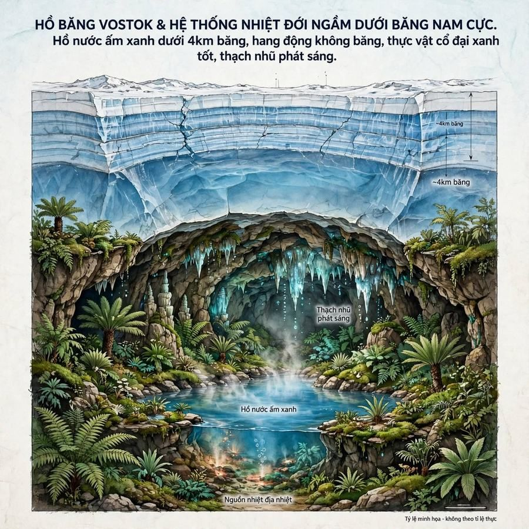
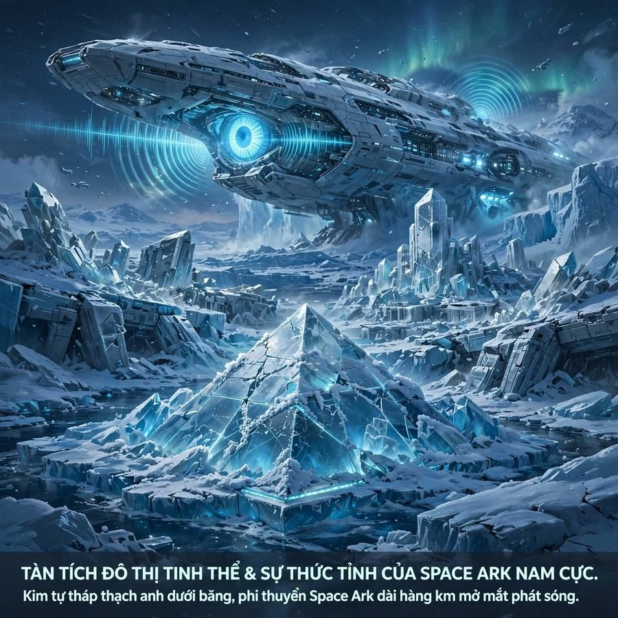
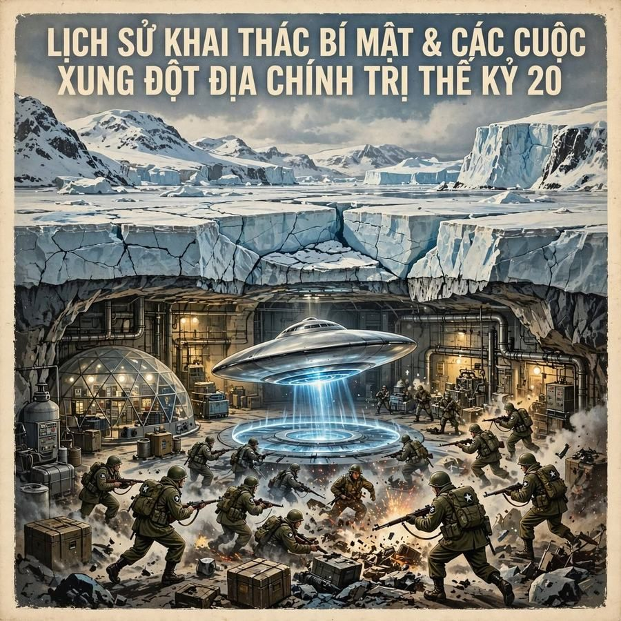
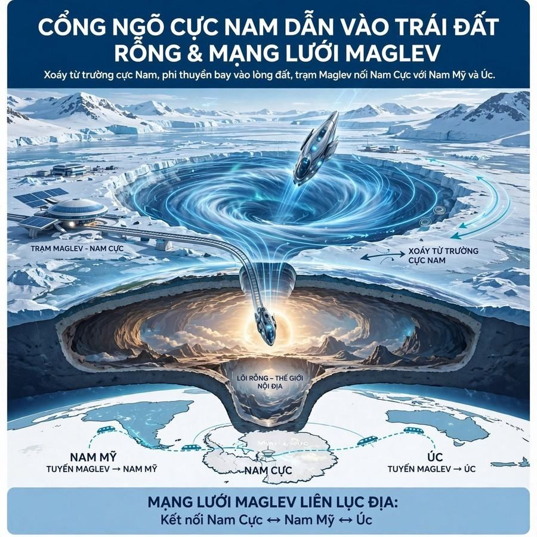
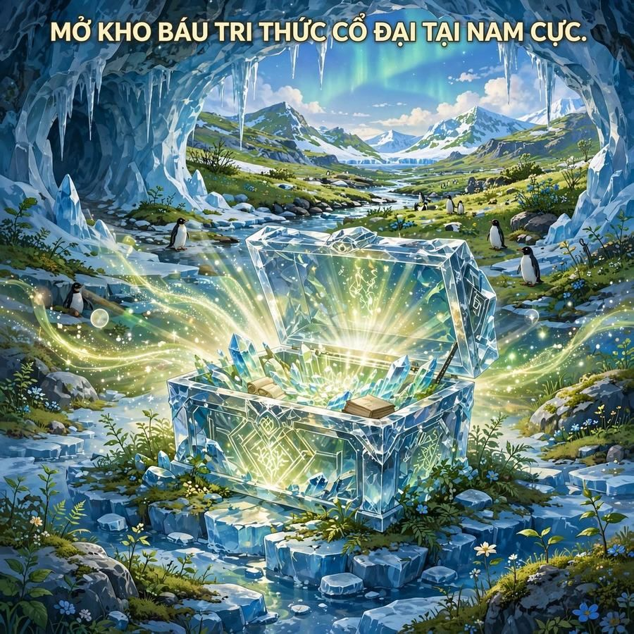

Trang chủ / Chuyên đề 4: Văn Minh Lòng Đất / Kỳ 37
Chuyên đề 4 · Kỳ 37 / 90
BÍ ẨN HỒ VOSTOK & CÁC CẤU TRÚC CỔ ĐẠI NẰM SÂU DƯỚI BĂNG GIÁ NAM CỰC

Ở Kỳ 6, chúng ta đã cùng nhau hành hương đến dãy núi Himalaya hùng vĩ để giải mã Vương quốc Shambhala — trung tâm năng lượng từ bi và thư viện tri thức giác ngộ của mạng lưới Agartha.
Hôm nay, chuyến du hành giải mã thế giới ngầm sẽ đưa chúng ta đến với vùng đất bí ẩn, cô lập và khắc nghiệt nhất trên Trái Đất: Đại lục Nam Cực (Antarctica).
Bên dưới lớp băng vĩnh cửu dày hàng kilômét của Nam Cực thực sự ẩn chứa điều gì? Sự thật về Hồ nước ngầm Vostok nằm sâu hơn 4 km dưới lòng băng với hệ sinh thái ấm áp không bị đóng băng ra sao? Những tàn tích đô thị tinh thể của nền văn minh cổ đại bị chôn vùi khi trục Trái Đất dịch chuyển hàng chục ngàn năm trước mang hình thái thế nào? Sự thức tỉnh của đại chiến hạm Space Ark Nam Cực đang phát ra dải tần số kết nối với mạng lưới Agartha ra sao? Và tại sao Nam Cực lại được coi là Cổng Ngõ Cực Nam tối quan trọng dẫn thẳng vào thế giới Trái Đất Rỗng?
Hãy cùng dấn thân vào Kỳ 7: Bí Ẩn Hồ Vostok & Các Cấu Trúc Cổ Đại Nằm Sâu Dưới Băng Giá Nam Cực để khám phá đại lục bí ẩn nhất hành tinh!
✦ ✦ ✦1. HỒ BĂNG VOSTOK & HỆ THỐNG NHIỆT ĐỚI NGẦM DƯỚI BĂNG NAM CỰC
Trong nhận thức khoa học bề mặt thông thường, Nam Cực chỉ là một hoang mạc băng giá hoang vu không có sự sống. Tuy nhiên, các dữ liệu thám hiểm địa từ và giải mật vũ trụ tiết lộ một bức tranh hoàn toàn ngược lại dưới lòng băng.
A. Hồ Nước Siêu Dưới Băng (Subglacial Lake Vostok)
- Biển Nước Ngọt Nằm Sâu 4km: Nằm bên dưới trạm nghiên cứu Vostok ở độ sâu hơn 4.000 mét băng đá là một hồ nước ngọt khổng lồ có diện tích hàng ngàn kilômét vuông.
- Nhiệt Năng Địa Nhiệt & Không Bị Đóng Băng: Nhờ nguồn nhiệt năng địa nhiệt từ lòng Trái Đất và áp suất từ trường đặc biệt, nước trong Hồ Vostok duy trì ở trạng thái lỏng ấm áp (khoảng 18°C đến 20°C), hoàn toàn tách biệt khỏi môi trường băng giá bên trên suốt hàng triệu năm.
B. Hệ Sinh Thái Cổ Đại & Bầu Khí Quyển Tự Phát Sáng
- Những Thung Lũng Không Băng (Ice-Free Caverns): Xung quanh Hồ Vostok là các vòm hang động khổng lồ được vòm băng bảo vệ. Nơi đây sở hữu thảm thực vật cổ đại xanh tốt, thạch nhũ tinh thể tỏa sáng và bầu khí quyển giàu oxy.
- Dấu Tích Kỷ Nguyên Nhiệt Đới: Trước khi trục Trái Đất bị biến dạng bởi thảm họa cổ đại làm Nam Cực bị đóng băng, đại lục này từng là một vùng đất nhiệt đới trù phú với các dòng sông, rừng cây và hệ sinh thái rực rỡ.

2. TÀN TÍCH ĐÔ THỊ TINH THỂ & SỰ THỨC TỈNH CỦA SPACE ARK NAM CỰC
Sâu bên dưới các tầng băng Nam Cực không chỉ có thiên nhiên ngầm, mà còn cất giữ những công trình kiến trúc vượt xa hình dung của con người hiện đại.
A. Văn Minh Cổ Đại Bị Đóng Băng (Pre-Adamite Ruins)
- Các Kim Tự Tháp & Đền Thờ Tinh Thể: Các đội thám hiểm đã phát hiện ra tàn tích của các đại đô thị cổ đại với các kim tự tháp bằng thạch anh, các cột trụ hình học thiêng liêng và những tòa nhà bằng hợp kim không bị ăn mòn.
- Bị Chôn Vùi Bởi Thảm Họa Đột Ngột: Nền văn minh này đã bị chôn vùi dưới hàng ngàn mét băng khi một thảm họa đại địa chất xảy ra cách đây hàng chục ngàn năm, làm đảo cực từ trường và đẩy Nam Cực về phía Cực Nam.
B. Sự Thức Tỉnh Của Đại Chiến Hạm Space Ark Hồ Vostok
- Phi Thuyền Tinh Thể Hữu Cơ Khổng Lồ: Nằm sâu dưới lòng Hồ Vostok là một con tàu Hòm Không Gian (Space Ark) bằng hợp kim tinh thể hữu cơ kéo dài nhiều kilômét do Liên Minh Các Đấng Sáng Lập chôn giấu từ cổ đại.
- Kích Hoạt Tần Số Kết Nối Agartha: Gần đây, con tàu này đã chính thức "mở mắt", phát ra các chùm sóng vô hướng tần số cao xuyên qua lớp băng, kết nối trực tiếp với mạng lưới Agartha, thành phố Telos, Shambhala và các con tàu Space Arks khác trên toàn cầu.

3. LỊCH SỬ KHAI THÁC BÍ MẬT & CÁC CUỘC XUNG ĐỘT ĐỊA CHÍNH TRỊ THẾ KỶ 20
Vị trí chiến lược và tài nguyên công nghệ tại Nam Cực đã biến đại lục này thành tâm điểm của các chiến dịch bí mật trong thế kỷ qua.
A. Cuộc Thám Hiểm Neuschwabenland & Lối Vào Lòng Đất
- Phát Hiện Các Vòm Hang Băng Ấm: Từ những năm 1930–1940, các đoàn thám hiểm bề mặt đã phát hiện ra các lối vào hang động ngầm không bị đóng băng tại khu vực Queen Maud Land (Neuschwabenland).
- Xây Dựng Căn Cứ Ngầm Tách Biệt: Giới tinh hoa quân sự khi đó đã âm thầm hợp tác với các thế lực tiêu cực để xây dựng các căn cứ ngầm sâu bên dưới lòng băng, phát triển các công nghệ đĩa bay kháng hấp dẫn và thành lập các chương trình không gian bí mật.
B. Chiến Dịch Quét Sạch Của Lực Lượng Liên Minh Trái Đất
- Thu Hồi Quyền Kiểm Soát Nam Cực: Trong những năm gần đây, Lực lượng Liên minh Trái Đất phối hợp với Liên Đoàn Thế Giới Thiên Hà đã phát động các chiến dịch ngầm giải phóng Nam Cực, quét sạch các căn cứ tiêu cực và lấy lại quyền kiểm soát các Cổng Sao ngầm.

4. CỔNG NGÕ CỰC NAM DẪN VÀO TRÁI ĐẤT RỖNG & MẠNG LƯỚI MAGLEV
Nam Cực đóng vai trò là một trong hai cửa ngõ chính (cùng với Cực Bắc) kết nối bề mặt với thế giới bên trong lòng đất.
A. Cửa Ngõ Cực Nam Trái Đất Rỗng
- Điểm Trũng Từ Trường Cực Nam: Tại khu vực Nam Cực tồn tại một điểm xoáy từ trường khổng lồ, nơi vỏ Trái Đất uốn cong đi sâu vào không gian lòng đất bên trong.
- Trạm Giao Thoa Vũ Trụ: Cửa ngõ này cho phép các đĩa bay và tàu du hành liên sao di chuyển dễ dàng giữa không gian ngoài vũ trụ, bề mặt Trái Đất và thế giới ngầm Agartha mà không gặp phải rào chắn khí quyển.
B. Nút Giao Thông Maglev Xuyên Đại Lục
- Nối Liền Nam Cực Với Nam Mỹ Và Châu Đại Dương: Bên dưới tầng băng Nam Cực là trạm trung chuyển của hệ thống tàu điện từ Maglev tốc độ cao. Mạng lưới đường ống chân không này nối liền Nam Cực với căn cứ ngầm dưới rừng rậm Brazil, núi Shasta (Bắc Mỹ) và vùng lòng đất Úc.

5. LỜI KẾT KỲ 7: MỞ KHO BÁU TRI THỨC CỔ ĐẠI TẠI NAM CỰC
Kỳ 7 của chuyên đề 4 khép lại mang đến cái nhìn bừng tỉnh về đại lục Nam Cực:
- Nam Cực Là Kho Báu Tri Thức Của Nhân Loại: Nam Cực không phải là vùng đất băng giá chết. Nơi đây cất giữ những bí mật lớn nhất về lịch sử Trái Đất, công nghệ Năng lượng Điểm Không và di sản của Các Đấng Sáng Lập!
- Sự Thật Đang Được Đưa Ra Ánh Sáng: Khi ma trận kiểm soát sụp đổ và các con tàu Space Arks thức tỉnh, tri thức bị che giấu tại Nam Cực sẽ dần được công khai, góp phần đưa nhân loại bước vào Kỷ nguyên Thức Tỉnh toàn diện!
